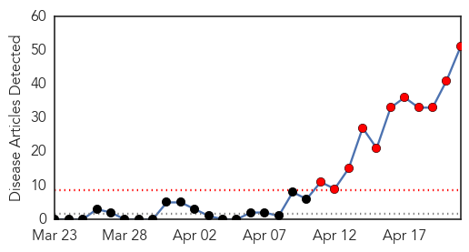
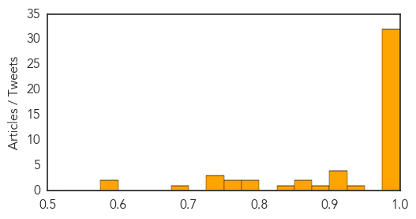
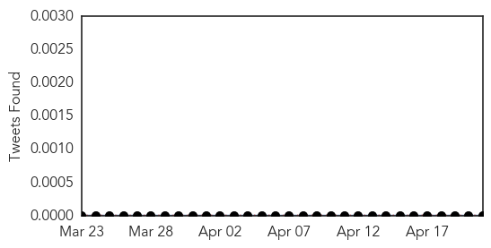

MERS
30-Day Web Trend
11 alerts, 0 warnings

30-Day Twitter Trend
1 alerts, 0 warnings

Article Locations

Article Confidences
Top Articles:
- 1.000
- Saudi announces spike in cases, UAE and Philippines track down possible carriers
- 1.000
- 5 more Mers cases tested negative in UAE - Emirates 24
- 1.000
- Saudi officials see spike in MERS coronavirus cases
- 1.000
- SARS-Like MERS Virus Spreads Among Health Care Workers
- 0.999
- MERS-CoV Still Prevalent in Saudi Arabia
- 0.999
- DFA, DOH urge OFWs not to panic over MERS-Cov
- 0.998
- 100 Etihad passengers test negative for MERS-CoV
- 0.998
- Two more UAE Mers cases test negative for the virus
- 0.998
- 12 new cases of MERS infections found in UAE
- 0.998
- DoH tracks down possible virus cases
- 0.998
- Gov’t assures public on MERS-CoV: Don’t panic
- 0.998
- DH closely monitors additional overseas MERS case reported to WHO
- 0.997
- S. Arabia announces jump in new cases of deadly MERS virus
- 0.997
- Saudi health minister sacked amid virus deaths
- 0.997
- Suspected carrier of killer virus isolated
- 0.997
- Saudi To Develop MERS Vaccine To Combat Outbreak
- 0.997
- Farsnews
- 0.997
- Saudi health minister sacked amid virus deaths
- 0.996
- Two Mers cases in UAE tested negative; patients to be discharged soon
- 0.993
- Saudi Arabia sacks health chief as MERS cases surge
- 0.991
- Ona: Philippines is MERS-free
- 0.991
- Haj piligrimage to continue despite MERS increase
- 0.990
- Saudi Arabia says ready for Hajj pilgrimage despite rise in MERS cases
- 0.990
- Get medical checkup, 174 passengers told
- 0.989
- Villagers monitored, not quarantined for MERS: Health DG
- 0.987
- Hunt possible virus carriers – Aquino
- 0.986
- Haj to continue despite MERS increase
- 0.986
- Saudi Arabia confirms jump in MERS cases
- 0.983
- Palace: 100 passengers negative for MERS virus
- 0.983
- Prevention is key to containing MERS
- 0.978
- New tests on OFW negative for MERS-CoV
- 0.977
- Greece's First MERS Virus Patient in Critical Condition
- 0.936
- 5 OFWs from Negros quarantined for MERS-CoV tests
- 0.921
- USDA orders farms to report pig virus infections
- 0.917
- Palace appeals to plane passengers
- 0.906
- Negros Oriental
- 0.904
- Policemen ordered to find 174 plane passengers unaccounted for
- 0.878
- For MERS-COV test in Negros Occ Five OFWs under quarantine
- 0.862
- Saudi King dismisses health minister over MERS cases
- 0.857
- Saudi King dismisses health minister over MERS cases
- 0.833
- Farms must report pig virus
- 0.778
- HMT April 21, 2014 newsletter
- 0.775
- Negros Oriental
- 0.762
- Fatal MERS virus carried to Greece from Saudi Arabia
- 0.757
- Schools seek ministries’ advice over coronavirus
- 0.737
- Saudi King dismisses health minister over MERS cases
- 0.734
- Hog Farmers Required To Report Disease Outbreaks
- 0.732
- Porcine Epidemic Diarrhea reporting now required in effort to slow disease
- 0.699
- Saudi dismisses health minister over rise of MERS cases
- 0.592
- Agriculture Secretary Vilsack orders federal response to PEDv
Showing top 50 articles...
Top Tweets:
-
No tweets found for Apr 21, 2014
Bubonic Plague
30-Day Web Trend
3 alerts, 0 warnings
30-Day Twitter Trend
0 alerts, 0 warnings

Article Locations

Article Confidences

Top Articles:
-
No articles found for Apr 21, 2014
Top Tweets:
-
No tweets found for Apr 21, 2014